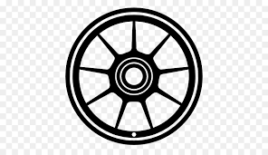
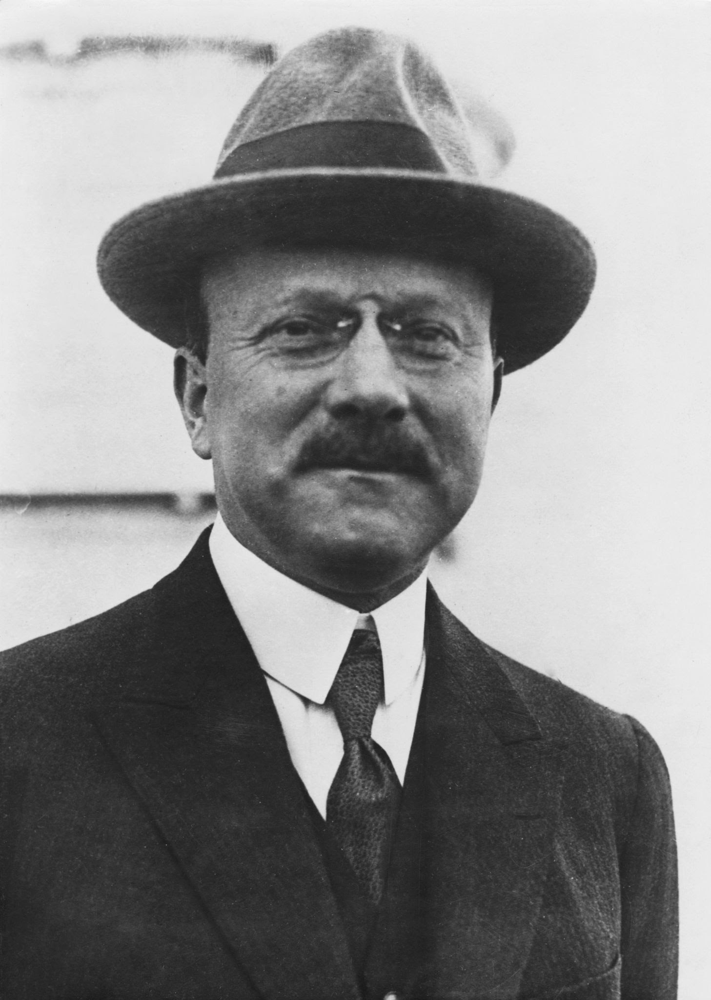

Fabricars

André Citroen
(París, 1878 - id., 1935) Ingeniero y empresario francés, fundador de la factoría automovilística francesa que lleva su apellido; junto con otros empresarios e inventores como Carl Benz, Gottlieb Daimler, Louis Renault o Giovanni Agnelli, fue uno de los pioneros de la entonces naciente industria del automóvil. Estudió en la Escuela Politécnica de París y ya en sus inicios como director industrial coordinó con éxito la fabricación de engranajes de dientes angulares. Inició su trayectoria en el sector de la automoción en 1908, en la fábrica de automóviles Mors, donde consiguió aumentar de manera espectacular la producción de vehículos, que pasó de 120 a 1.200 unidades anuales en cinco años
